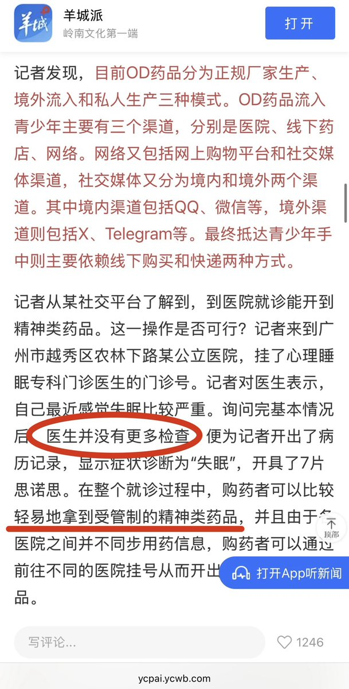

@cuichuna7 因为开这个的流程就特别..
他让你做一个量表 跟做题一样 想开的人也都能开到
而且还是网上那种 明明可以免费做的量表 他却要收你两三百 四五百 还不收你网上做的
根本就是医院圈钱的手段
还要求必须到医院开 不能从网上买 美其名曰增强管控防止滥用
其实这个东西根本就没有管控的必要 随便买得了

他让你做一个量表 跟做题一样 想开的人也都能开到
而且还是网上那种 明明可以免费做的量表 他却要收你两三百 四五百 还不收你网上做的
根本就是医院圈钱的手段
还要求必须到医院开 不能从网上买 美其名曰增强管控防止滥用
其实这个东西根本就没有管控的必要 随便买得了

失眠怎么检查😓难道开安眠药也要住院专人观察你到底是不是真的睡不着吗😮其实医院渠道的毕竟都有处方记录，事后也无法核查到底是不是真的焦虑/失眠😇换句话说这也算目前為數不多の中國大陸の合法吸毒路子😋（沒有教唆的意思，只是圖中新聞告訴大家有這個漏洞，雖然這個漏洞完全可以不分享出來但是官媒 https://t.co/8O5jKM2ncE